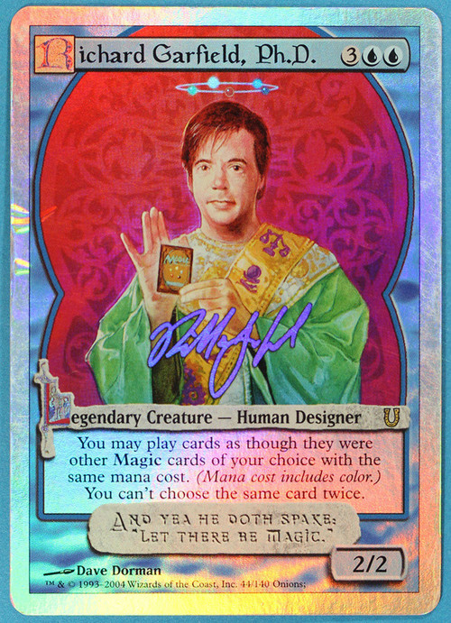

理性的方法去分析不理性¶
2016-07-05
我觉得所有的科学也好，方法也好都是一个用已知对抗未知的过程，用可控对抗不可控的办法。
说一下我眼中的理性。
首先是逻辑和数学方法，数学和逻辑学并不像自然科学，数学和逻辑学存在绝对的真理，绝对的错误，只要公理存在就可以得出推论，这就是著名的公理化方法。
但是周围太多的东西存在不确定性，从量子力学到社会科学，即使数学自身也存在着哥德尔不完备定理。
最重要的是，我希望我们不要变成传道士，不要认为你是兜售圣经的人，世界上这种人已经太多了。——计算机程序的构造和解释（SICP）
重要的不是我们已经学会了什么，而是我们怎么去学会什么。“授人以鱼不如授人以渔。”
现代经济学有个重要的理论叫做博弈论（发明人还有些传奇的经历，感兴趣请找一部影片叫做美丽心灵），是用数学方法去分析人在激励下的行为，已经被广泛应用到经济学甚至是生物，军事，计算机和游戏设计上。
用建立模型的方法和应用数学去分析事物会比凭感觉可靠的许多，甚至可以直观的体现在游戏上。
比如说你在塑造DnD里的一个人物，怎样的数值才会让你觉得这个人物很强，为什么DnD的基础数值要设立为这几项，如果DnD数值像人类DNA信息一样复杂会如何。
比如万智牌为什么要使用五色轮对奇幻世界万物分类，这些巧妙在哪里，堆叠（Stack）的概念解决了哪些问题，很多设计为什么被放弃了，五色轮在哲学意义上有哪些道理（http://blog.sina.com.cn/s/blog_515dd00f010124lx.html）
⬆万智的发明人 查理加菲博士（组合数学出身）的自己的万智牌卡，不过是全环境禁卡。
比如电子竞技游戏中怎样保重公平性，BO3，BO5是怎么决定的，DOTA为什么要确立BAN人赛制，为什么要用小组赛和淘汰赛组合的方式，为什么每次打比赛过后游戏公司都倾向于调整平衡性。
你可能会发现，所谓的建模思想不是让你把所有的信息都记录下（那个玩意叫大数据而且不怎么准（怒黑一波大数据））而是根据最有用的信息和关系建立一个模型并且不断完善它，只保留最可靠的信息。
“如果能够少做就不应该多做”
“如果没有必要就不应当假设很多东西” ——奥卡姆剃刀原则
不是所有的知识都有用，尤其是某些对你宣称天上的星星与你未来的命运有关的家伙。如果有人能预测未来，那么他至少知道你的许多信息作出推论，那么一个只知道你的几乎信息价值为零的星座的人居然能推演你所谓的命运你不觉得很扯么，我知道有人觉得它很准，我之前也曾纳闷为什么算命和星座会吸引这么多人知道我看了一些心理学。。。全是套路，不然你让他算一个极其准确的问题好了，一定要在封闭非干涉的条件下做。所谓的算命只会给你些模棱两可的答案，你的大脑此时就进入了律师模式，有了结论然后找证据往自己身上贴，最后得出算命好准甚至忽视一些明显的逻辑错误。
你要知道，世界上不可控的东西那么多，最可以相信的还是自己，其次就是逻辑与理性。